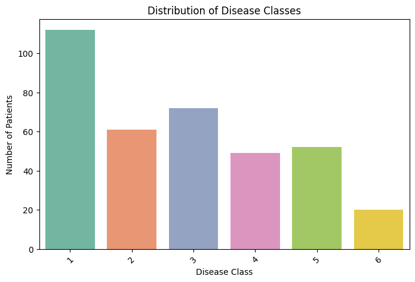
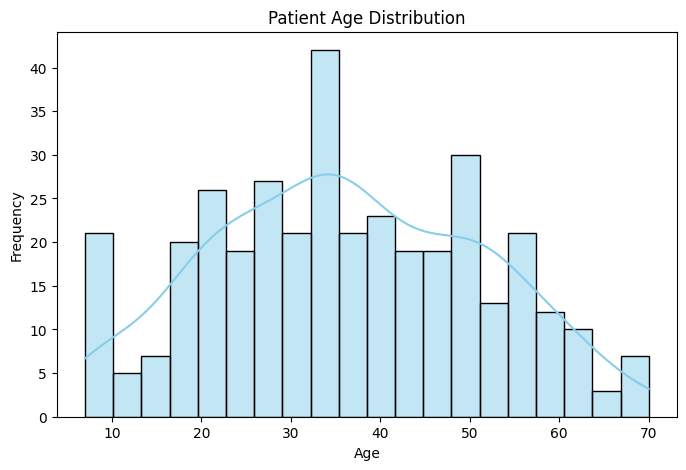
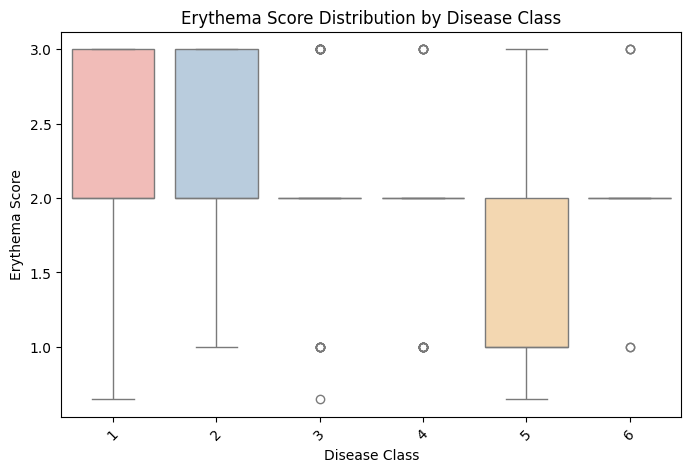
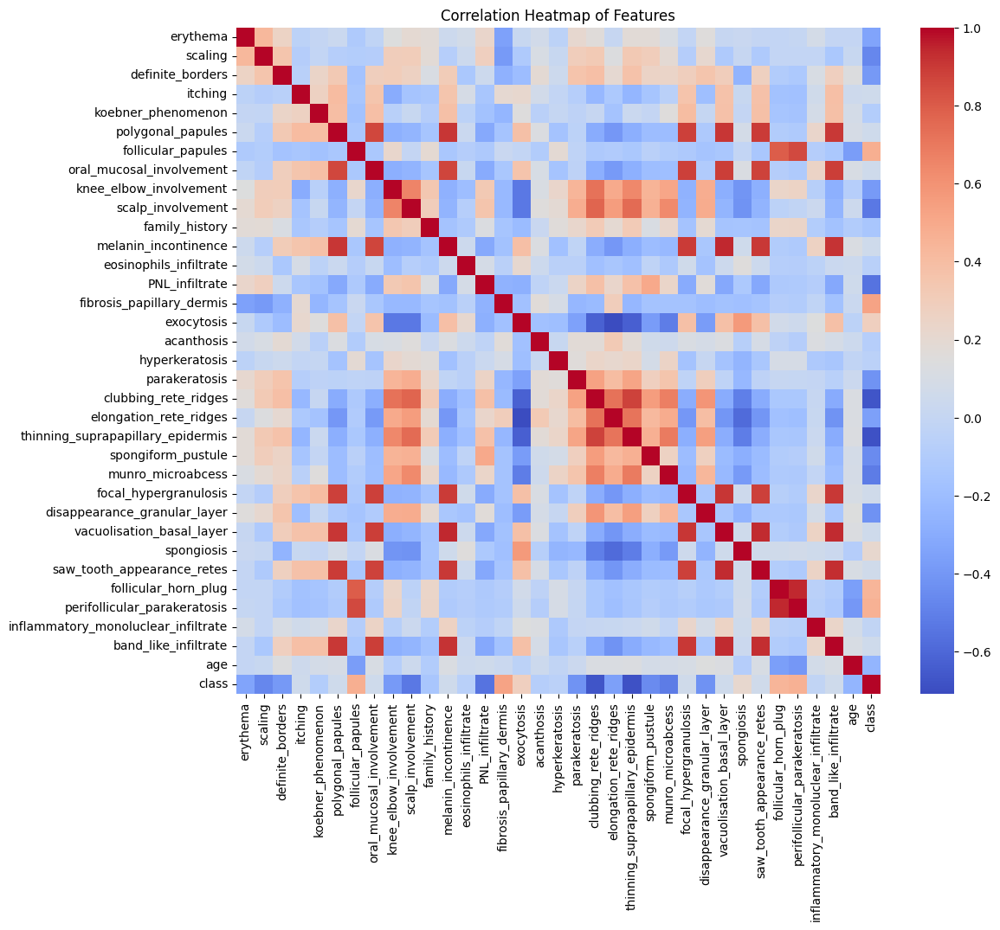
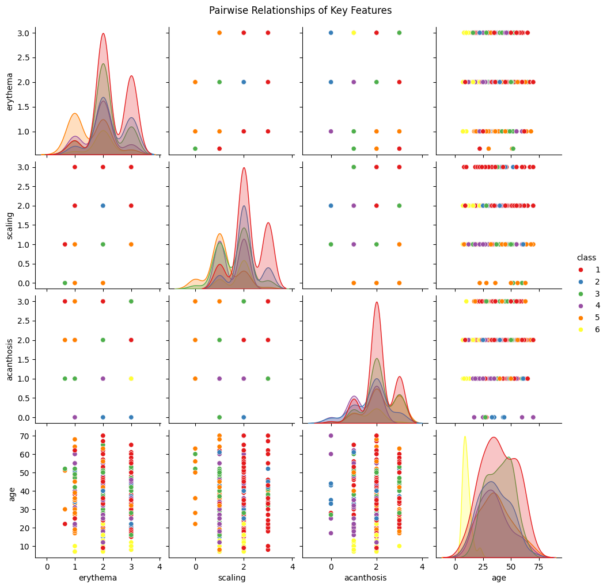
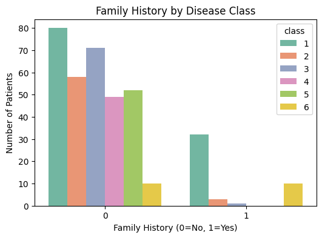
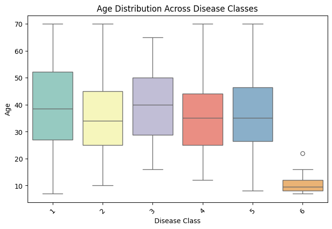
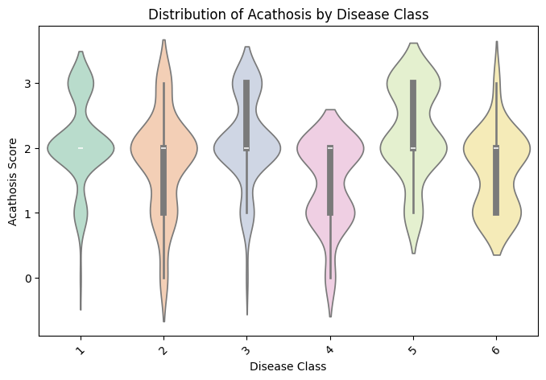
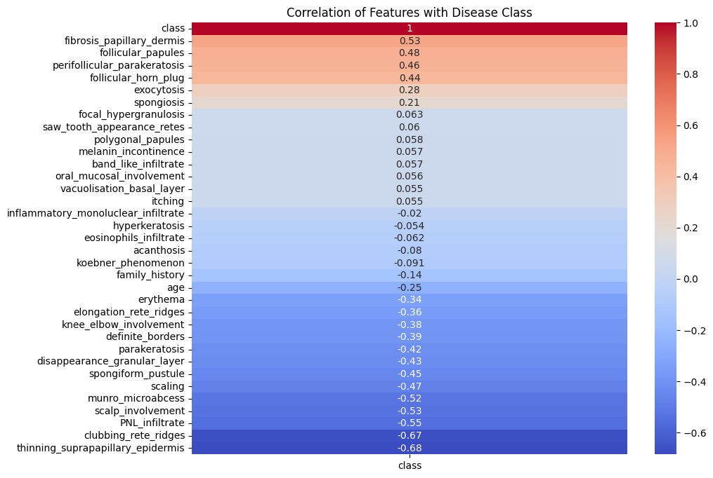
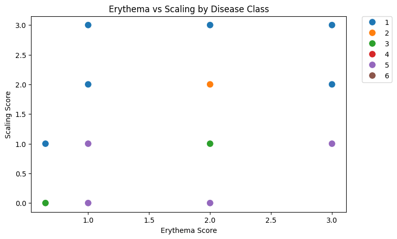

In this section, we explore the dermatology dataset visually to understand patterns, distributions, and relationships between features. Each visualization highlights an important aspect of the data that informs further analysis and modeling.

This bar chart shows how patient cases are distributed across the six erythemato-squamous diseases in the dataset. Disease class 1 has the highest number of samples, while class 6 has the fewest, indicating that the dataset is imbalanced. Such imbalance is important because machine learning models may become biased toward more frequent classes, potentially reducing performance for rare conditions. The variation in class frequencies also reflects real-world clinical scenarios where certain skin diseases are more commonly diagnosed than others. Understanding this distribution helps guide decisions such as applying class weighting or resampling techniques to ensure fair model performance across all disease types.

The histogram illustrates the age distribution of patients included in the dermatology dataset. Most patients fall between approximately 20 and 50 years, with fewer cases at very young and older ages. The smooth curve indicates a fairly continuous distribution rather than isolated age clusters, suggesting that erythemato-squamous diseases affect a broad age range. Age can play a role in disease manifestation and diagnosis, so recognizing its distribution helps assess whether age should be treated as an influential predictive feature. Since the data does not show extreme skewness, age appears well represented and suitable for use in classification modeling.

The provided box plot illustrates the distribution of Erythema Scores (ranging from approximately 0.5 to 3.0) across six distinct Disease Classes. Disease Classes 1 and 2 show the highest central tendencies, with medians and upper quartiles reaching the maximum score of 3.0, though Class 1 exhibits a much broader range of lower scores. In contrast, Classes 3, 4, and 6 appear highly concentrated, with their primary data clusters flattened around a score of 2.0, punctuated only by specific outliers at the 1.0 and 3.0 marks. Class 5 displays a unique downward shift compared to the first two categories, with its interquartile range spanning between 1.0 and 2.0, suggesting that while redness is present, it is generally less severe in this group than in Classes 1 and 2.

The provided Correlation Heatmap illustrates the linear relationships between various clinical and histopathological features, with a color scale ranging from strong negative correlation (deep blue, -0.6) to strong positive correlation (deep red, 1.0). A prominent cluster of high positive correlation is visible among features like clubbing_rete_ridges, elongation_rete_ridges, and thinning_suprapapillary_epidermis, suggesting these structural changes often occur simultaneously in certain skin conditions. Additionally, polygonal_papules shows a strong positive relationship with oral_mucosal_involvement, melanin_incontinence, and focal_hypergranulosis, which may indicate a specific diagnostic pattern. Conversely, the class variable exhibits several negative correlations, particularly with erythema and scaling, implying that as these specific symptom scores increase, the numerical value of the disease classification tends to decrease.

This Pairwise Relationship plot (or pair plot) visualizes the interactions between clinical features—erythema, scaling, acanthosis, and age—color-coded by the six disease classes. The diagonal density plots reveal that while most classes share overlapping distributions for physical symptoms, Class 6 (yellow) stands out with a significantly younger age distribution compared to the other groups, which peak more broadly between ages 30 and 50. The scatter plots indicate that the clinical scores (erythema, scaling, and acanthosis) are categorical in nature, as data points are clustered at integer values (0, 1, 2, and 3), showing that high scores in these categories are common across several diseases but appear most densely populated for Class 1 (red). Overall, while physical symptoms show significant overlap, age appears to be a stronger differentiator for identifying specific classes like Class 6.

This grouped bar chart displays the distribution of Family History across the six disease classes, where 0 signifies no history and 1 signifies a positive history. Across all classes, the vast majority of patients do not have a family history of their respective conditions, with Class 1 showing the highest count in this category at 80 patients. Interestingly, Class 1 and Class 6 appear most distinct regarding genetic prevalence; Class 1 has a significant secondary cluster of over 30 patients with a positive family history, while Class 6 shows an equal split of 10 patients with and 10 without a family history. Conversely, Classes 2, 3, 4, and 5 show very few to no instances of positive family history, suggesting that these specific conditions may be less driven by hereditary factors compared to Class 1.

The provided box plot illustrates the Age Distribution Across Disease Classes, highlighting significant demographic differences between the various conditions. Most disease classes (1 through 5) exhibit broad age ranges, typically spanning from approximately 10 to 70 years, with median ages clustering between 35 and 40. Disease Class 6 stands out as a clear outlier in this dataset, presenting a much younger and more concentrated patient profile with a median age below 10 and a maximum age (excluding one outlier) reaching only about 16. This stark contrast is corroborated by the pairwise density plots, which show Class 6 (yellow) having a sharp, narrow peak at the lower end of the age scale while other classes show wider, overlapping curves. Such a distinct age distribution for Class 6 suggests it may represent a pediatric-specific condition, whereas the other classes are prevalent across a wider adult demographic.

The Distribution of Acanthosis by Disease Class violin plot illustrates the density and spread of acanthosis scores across the six clinical categories. Most classes exhibit a high density around a score of 2.0, with Class 3 and Class 5 showing more prominent clusters at the higher end of the scale, near 3.0. In contrast, Class 4 displays a noticeable bimodal-like shape with a significant concentration of lower scores near 1.0, suggesting a generally less severe presentation of acanthosis compared to the other groups. This variation aligns with the Pairwise Relationship data, which shows that while acanthosis scores are categorical (0–3), their frequency and intensity fluctuate depending on the specific disease class being observed.

The Correlation of Features with Disease Class heatmap provides a detailed look at which clinical and histopathological markers most strongly influence the numerical classification of the skin conditions in this dataset. According to the chart, the features with the strongest positive correlations to higher class numbers are fibrosis_papillary_dermis (0.53), follicular_papules (0.48), and perifollicular_parakeratosis (0.46), suggesting these specific markers are highly characteristic of the upper disease classes. Conversely, several features show strong negative correlations with the class variable, most notably thinning_suprapapillary_epidermis (-0.68) and clubbing_rete_ridges (-0.67), which indicates that as these symptoms become more severe, the disease is more likely to be categorized into the lower numerical classes, such as Class 1 or 2. This aligns with other visual data, such as the Pairwise Relationship plot, where Class 1 (red) and Class 2 (blue) show dense clusters for symptoms like erythema and scaling, which also carry negative correlation coefficients of -0.34 and -0.47 respectively. Additionally, while age shows a negative correlation of -0.25 with the class variable, the Age Distribution box plot clarifies that this is largely driven by the extremely young demographic of Class 6, which has a median age below 10, whereas the other classes are distributed broadly across adult ages. Ultimately, the heatmap clarifies that while many features like focal_hypergranulosis (0.063) or itching (0.055) have negligible direct impact on the class number, structural histopathological changes like PNL_infiltrate (-0.55) and scalp_involvement (-0.53) serve as the most significant mathematical differentiators for identifying the specific disease category.

This scatter plot examines the relationship between Erythema Score and Scaling Score, categorized by the six disease classes. Because both metrics use a discrete scoring system (typically 0–3), the data points are strictly aligned on a grid, showing that Class 1 (blue) is the most widespread, appearing at almost every combination of high erythema and high scaling scores. Class 2 (orange) and Class 3 (green) show more specific clusters; for instance, Class 2 is notably present at the intersection of a 2.0 erythema score and 2.0 scaling score, while Class 3 appears at lower levels of both. Class 5 (purple) is concentrated at lower scaling scores (0.0 to 1.0) even when erythema scores are present, which aligns with the Correlation Heatmap where scaling has a negative correlation with higher class numbers. Notably, Class 6 (brown) and Class 4 (red) are less visible or overlapping in this specific view, suggesting that these two symptoms alone may not be the primary clinical differentiators for those conditions compared to features like Age or Family History.